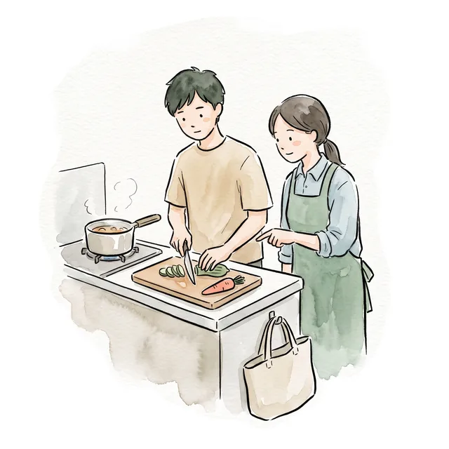

ホーム ／ 採用情報
採用情報

ご利用者さまらしさを
オーダーメイドの
はるうたは、
JOB
お仕事の内容
- 募集職種
- 【正社員】看護師
（看護師・准看護師） ・作業療法士
- ご利用者さまの
ご自宅などへの 訪問 （1日あたり4〜5件を 想定） - こころと
身体の 状態の 観察、 服薬の 支援 - 不安や
気分の 落ち込み、 対人関係などの 悩みへの 傾聴・助言 - 日常生活リズムの
調整、 セルフケアの 支援 - 再発予防・病状が
悪くなった ときの 早めの 対応 - ご家族への
相談支援・教育的な 関わり - 主治医や
関係機関との 連携・調整 - 訪問看護記録の
入力 （電子カルテ・ICT システムを 導入しています）
統合失調症・うつ病・双極性障害・パニック障害・発達障害・依存症など、
SALARY
給与・勤務
看護師・作業療法士
- 契約期間中
- 300,000円
- 正規雇用時
- 330,000〜350,000円
准看護師
- 契約期間中
- 265,000円
- 正規雇用時
- 300,000〜320,000円
- 勤務時間
- 月曜〜日曜の
うち週5日 （水曜日を 含む）
9:00〜18:00 の間で 8時間 （休憩60分） - 休日
- 週休2日（シフト制）
- 休暇・制度
- 産前産後休暇・育児休業・介護休業制度
（育児休業から 復帰した 実績あり）、 結婚 休暇・慶弔休暇
BENEFITS
待遇
勤務・雇用条件
- 社会保険完備
（雇用・労災・健康・厚生年金） - 年1回昇給・賞与あり
- 有給休暇
（入職6か 月後より 付与） - 時短勤務OK
（ お子さまが 小学校3年生まで 対象） - 直行直帰OK／服装自由・
制服なし （ 私服で 訪問できます）
勤務環境・設備
- 正社員には
社用車を ※契約期間中は支給 （自家用車を お持ちか どうかは 問いません） 原則と して 社用車の 支給は ありません。 車両費と して 月5,000円を 給与から 差し 引きます。 - 駐車場代・ガソリン代・オイル・エレメント交換・車検など、
車両の 維持費は 全額会社負担 - バイタルセット・iPad・社用携帯を
貸与 - 記録スペースは
5部屋。 自分に 合った 環境を 自由に 選べます - 仮眠室／漫画スペース／Netflix・YouTube を
見られる リラックス空間
食事・休憩
- 事務所の
カップラーメン・ お菓子・ジュース・アイス・コーヒー （デロンギ）は 自由に 飲食できます - 毎週
水曜は 訪問業務なし。 社内レクリエーションや カンファレンスの 日です - 水曜の
昼食は、 スタッフ向けの 手作り料理
教育・成長支援
- 社内で
承認された 学会・セミナー・資格取得・ 書籍などは 会社が 費用を 負担 - 毎月
第3水曜：カイロプラクティックの 専門講師を 招いた 社内研修
イベント・交流
- 月1回の
アクティビティ （例：体育館を 貸し切っての レクリエーション） - 2か月に
1度、 全額会社負担の 懇親会
その他
- オンコールあり
（週1回程度・当番制） - 会社犬が
在籍し、 ※犬アレルギーのドッグセラピーを 行っています 方は ご遠慮いただいています。
ENTRY
応募について
応募資格
- 普通
自動車運転免許 （AT限定可） - 訪問看護の
経験は 問いません （未経験の 方も 歓迎） - 精神科での
実務経験が 1年以上 ある 方
お住まい（次のいずれかにお住まいの方）
- 福岡市
（早良区・西区を 除く） - 春日市、
大野城市、 粕屋郡、 福津市、 古賀市、 宗像市